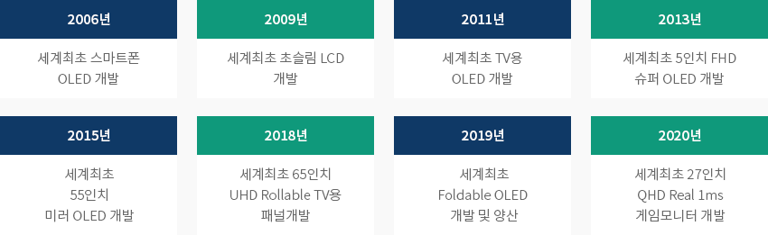

디스플레이
- Home
- Why KOREA
- 산업
- 디스플레이
디스플레이
Display
-
한국,세계 디스플레이 시장 점유율 1위 내용닫기한국, 세계 디스플레이 시장 점유율 1위2020년 기준 세계 디스플레이시장 점유율은 한국 36.9%, 중국 36.2%, 대만 22.6%, 일본 3.6%로
한국이 17년째 세계시장 1위를 유지하고 있다. 특히 차세대 디스플레이로 불리는 OLED 시장은 한국이 87.5%를 점유하면서
글로벌 시장을 선도하고 있다. 고부가가치 OLED는 폴더블폰, 롤러블TV 등 혁신 제품의 핵심 역할을 수행하고 있다.
특히 삼성디스플레이는 중소형 OLED 분야 세계 1위이며,LG디스플레이는 대형 OLED 분야 세계 1위 자리를 유지하고 있다.
LCD는 한국기업이 고부가가치 OLED 전환을 위해 생산을 축소하면서 2018년 중국에게 세계 1위 자리를 내주었다.
삼성디스플레이와 LG디스플레이 모두 OLED 생산 확대를 위해 전략적으로 LCD 생산을 축소시키고 있는 상황이다."2020년 세계 디스플레이 시장 점유율(금액기준)" ※ 출저 : OMDIA 2021한국은 세계 디스플레이 시장뿐 아니라 기술 분야도 지속적인 기술개발을 통해 차세대 기술을 선도하고 있다.
※ 출저 : OMDIA 2021한국은 세계 디스플레이 시장뿐 아니라 기술 분야도 지속적인 기술개발을 통해 차세대 기술을 선도하고 있다.
2006년 세계 최초 스마트폰 OLED, 2011년 세계최초 TV용 OLED, 2019년 세계 최초 Foldable OLED 등 혁신기술에 대해서는
한국이 세계 최초로 개발하였으며 한국의 OLED 생산 기술력은 경쟁국보다 3~5년 앞서 있다."차세대 디스플레이 기술 선도국"- 2006년 - 세계최초 스마트폰 OLED 개발
- 2009년 - 세계최초 초슬림 LCD 개발
- 2011년 - 세계최초 TV용 OLED 개발
- 2013년 - 세계최초 5인치 FHD 슈퍼 OLED 개발
- 2015년 - 세계최초 55인치 미러 OLED 개발
- 2018년 - 세계최초 65인치 UHD Rollable TV용 패널개발
- 2019년 - 세계최초 Foldable OLED 개발 및 양산
- 2020년 - 세계최초 27인치 QHD Real 1ms게임모니터 개발
-
건강한 한국 디스플레이 소재, 부품, 장비 생태계 내용열기건강한 한국 디스플레이 소재, 부품, 장비 생태계한국 디스플레이 산업은 패널기업 삼성디스플레이, LG디스플레이를 중심으로 패널을 생산할 수 있는 장비기업 376개사와
제조공정에서 사용되는 소재부품 681社개사로 구성되어 있다. 국내 디스플레이산업 총생산은 67.8조원으로 패널 54.5조원(80%),
소재부품 7.1조원(10.5%), 장비 6.2조원(9.1%)으로 구성되어 있다. 고용은 모두 8.8만명으로 패널 5.1만명, 소재부품 2.3만명,
장비 1.4만명이 종사하고 있다. 최근 한국 디스플레이 산업은 LCD에서 OLED로 전환되면서 OLED 분야 고용이 증가하고 있다.
수출 구조는 대부분이 디스플레이 모듈공장과 TV, 휴대폰 등 세트기업이 위치한 베트남과 중국으로 대부분 수출하고 있으며,
베트남 수출 비중이 53%, 중국 수출 비중이 38% 비중이다."건강한 한국 디스플레이 소재, 부품, 장비 생태계"- 디스플레이 산업 - 총생산 67.8조원, 고용 8.8만명
- 패널 - 54.5조원(80.0%), 5.1만명 종사
- 소재부품 - 87.1조원(10.5%), 2.3만명 종사
- 장비 - 6.2조원(9.1%), 1.4만명 종사
(단위 : 억불, %, $)디스플레이 생산현황 표로 구분, 년도 정보제공 ※ 출처 : 반도체산업협회, 디스플레이산업협회, 정보통신산업진흥원 자료 -
소재분야 외투기업의 한국 진출 사례 내용열기소재분야 외투기업의 한국 진출 사례동우화인켐은 일본의 스미토모화학 기술을 기반으로 한국에는 1991년에 진출하였으며, 한국 디스플레이기업에게 포토레지스트,
터치센서 패널 등 핵심 소재 공급하였다. 평택, 익산, 삼기에 3개의 생산공장을 운영하고 있으며, 평택과 익산에 기술연구소까지
설립하면서 Flexible 소재 등 차세대 화학소재에 대한 연구개발을 진행중이다. 2020년 매출은 2조 4,700억원이며, 종사자는 약 2,700명이다.코닝정밀소재는 1995년에 삼성과 코닝의 합작으로 한국에 설립되었으며, LCD 생산의 핵심소재인 글라스를 한국기업에 공급하였다.
1996년 구미사업장에서 첫 제품을 생산한 이후, 2002년에는 천안사업장까지 준공하여 사업장을 확장시켜 나갔다. 또한 한국공장에서
생산된 LCD용 글라스를 중국에도 수출하고 있으며, 수출 금액은 지속 증가하고 있는 상황이다. 2020년 매출은 1조 4,430억원이며,
종사자는 약 2,500명이다.
-
R&D 및 시설투자에 대한 세액 공제 내용열기R&D 및 시설투자에 대한 세액 공제한국정부는 디스플레이 분야 연구인력개발비 세액공제, 시설투자 세액공제 등의 지원제도를 운영하고 있다. AMOLED,
마이크로 LED, QD(Quantum Dot) 등 7개 기술 및 시설이 지정되어 있어 이부분에 대한 R&D와 시설투자가 진행되면
투자금의 일부를 세액공제 해 주고 있다. 패널뿐 아니라 이와 관련 소재, 부품, 장비 모두 해당 되기 때문에 중소중견기업에서도
많이 활용을 하고 있는 제도중의 하나이다.R&D 및 시설투자에 대한 세액 공제 표로 구분, 디스플레이 분야 신성장 원천기술 세액공제 대상기술 정보제공 구분 디스플레이 분야 신성장 원천기술 세액공제 대상기술 1 9인치 이상 능동형 유기발광 다이오드(AMOLED) 패널 기능개선 및 부품ㆍ소재ㆍ장비 제조 기술 2 대기압 플라즈마 식각 장비 기술 3 플렉서블디스플레이 패널ㆍ부품ㆍ소재ㆍ장비 제조 기술 4 차세대 차량용디스플레이 패널ㆍ부품ㆍ소재ㆍ장비 제조 기술 5 마이크로LED 디스플레이 패널ㆍ부품ㆍ소재ㆍ장비 제조 기술 6 VRㆍARㆍMR용 디스플레이 패널ㆍ부품ㆍ소재ㆍ장비 제조 기술 7 친환경 QD(Quantum Dot) 나노 소재 적용 디스플레이 패널ㆍ부품ㆍ소재ㆍ장비 제조 기술 수급 원활화를 위한 할당관세 지원한국정부는 산업경쟁력 강화 및 물자수급 원활화 등을 위해 할당관세 제도를 운영하고 있다. 할당관세는 가격안정, 수급원활 등을
위하여 기본관세율에 40%p 범위의 율(率)을 인하하여 한시적으로 적용할 수 있는 탄력관세제도이다. 6개월 또는 1년마다 수요조사를
통해 할당관세 대상 품목을 선정하고 있으며, 디스플레이산업도 패널 생산에 필요한 제조장비 및 소재, 부품에 대해 할당관세를
지원 받고 있다. -
디스플레이 클러스터 현황 내용열기디스플레이 클러스터 현황한국 디스플레이 패널 생산지역은 1995년 이후 2004년까지 기흥, 천안, 구미가 중심이었으나, 생산라인 확대 과정에서
삼성디스플레이가 위치한 충남과 LG디스플레이가 위치한 파주를 중심으로 클러스터가 형성되어 있다.
LCD 및 OLED 관련 부품 및 소재업체들은 삼성디스플레이와 LG디스플레이가 신규라인을 각각 경기도 파주와 충청남도 탕정에
구축하면서 두 지역을 중심으로 클러스터가 구축된 상황이다.패널기업과 더불어 관련 소재와 부품, 장비 기업도 클러스터 중심으로 형성되기 시작 했다. 파주 클러스터에는 탑엔지니어링,
인베니아, LG화학, LG이노텍 등이 있으며, 충남 클러스터에는 에스에프에이, 디이엔티, 덕산네오룩스, 코닝정밀소재 등
다수의 소부장 기업이 위치해 있다."디스플레이 산업 클러스터"패널기업을 중심으로 장비ㆍ재료기업 산업거점이 형성LG디스플레이 - 파주 LCD단지- 장비기업 : 탑엔지니어링, 야스, 인베니아 外다수
- 소재기업 : LG화학, LG이노텍, 미래나노텍 外 다수
삼성디스플레이 - 충남 디스플레이 단지- 장비기업 : SFA, 세메스, 에버테크노, 디이엔티 外 다수
- 소재기업 : 덕산네오룩스, 미래나노텍, 코닝정밀소재 外
파주 디스플레이 클러스터파주 디스플레이 클러스터에는 LG디스플레이가 위치해 있다. LG디스플레이는 대형 TV용 LCD 및 OLED 패널을 생산하고 있으며,
7세대 공장, 8세대 공장을 비롯, OLED 생산라인, 모듈 공장을 운영하고 있다. 항만과 공항이 인근에 위치하여 있기 때문에
생산품의 90% 이상 수출 가능하며, 편리한 교통망 체계가 구축되어 있다.서울세관 의정부출장소가 파주 디스플레이 산업단지에 위치하여 수입통관 시간을 30분 이내로 단축되어 수출입 통관 절차와 시간이
절약도 가능하다. 또한 수도권과 인접하여 수도권 대학의 고급인력 공급이 가능하고 근접 대학과의 협약 및 특성화 고등학교 지정 등
지역內 인력 공급도 원활한 편이다.충남 디스플레이 클러스터충남은 패널기업 삼성디스플레이를 중심으로 다수의 소부장 기업들이 위치해 있다. 국내 디스플레이 산업의 약 50% 이상,
세계 디스플레이 산업의 약 25% 이상을 생산하는 디스플레이 분야 선도지역이다. 디스플레이 지원센터 구축 등 지자체의 지원 및
아산ㆍ탕정 배후지역의 1980년대 이후 약 35개의 대학이 입지하는 등 우수한 연구개발 기반 역량 보유하고 있다. 또한 KTX역이 있어
서울과 부산, 광주 등 여러 지역으로도 빠른 이동이 가능하며, 수출입을 위한 평택항이 30km의 가깝게 위치해 있어 물류비 절감도 가능하다."주요 디스플레이 클러스터 지리적 현황"주요 디스플레이 클러스터 지리적 현황 표로 구분, 파주, 탕정 정보제공 구분 파주 탕정 인천공항간 거리 50km 164km 항구 50km (인천) 30km (평택, 당진) 서울 35km 85km 서울역 60분 (자동차, 철도) 34분 (KTX), 90분 (자동차) 용수 팔당댐 대청댐 인근 도시 일산 천안 아산 ※ 자료협조 : 한국디스플레이산업협회


Invest KOREA담당자
반도체/디스플레이 PM
박동율
기간산업유치팀
T.+82-2-3460-7726
입지정보 추천
산업단지 정보
[충청남도 아산시] 아산제2테크노밸리일반산업단지
세부정보 바로가기를 클릭하시면 산업단지공단의 Smart K-Factory 서비스의 해당 정보 화면으로 이동합니다.
-
단지명아산제2테크노밸리일반산업단지
-
최초지정일2010.12.28
-
지정면적(km2)1,200,443
-
관리기관충청남도 아산시
-
인근철도역평택역
-
역과 거리(km)13
-
인근공항청주국제공항
-
공항과의 거리(km)60
-
공업용수 공급용량(톤/일)3915(㎥/일)
-
가정용수 공급용량(톤/일)-
-
소속 기초 지자체충청남도 아산시
-
인구수(명)313,871
산업단지 정보
[경기도 파주시] 신촌일반산업단지
세부정보 바로가기를 클릭하시면 산업단지공단의 Smart K-Factory 서비스의 해당 정보 화면으로 이동합니다.
-
단지명신촌일반산업단지
-
최초지정일2007.10.01
-
지정면적(km2)189,797
-
관리기관경기도 파주시
-
인근철도역행신역
-
역과 거리(km)27
-
인근공항김포국제공항
-
공항과의 거리(km)30
-
공업용수 공급용량(톤/일)233(㎥/일)[공업용수/생활용수 구분 없음]
-
가정용수 공급용량(톤/일)-
-
소속 기초 지자체경기도 파주시
-
인구수(명)459,158
산업단지 정보
[경기도 파주시] 탄현일반산업단지
세부정보 바로가기를 클릭하시면 산업단지공단의 Smart K-Factory 서비스의 해당 정보 화면으로 이동합니다.
-
단지명탄현일반산업단지
-
최초지정일2000.12.19
-
지정면적(km2)122,871
-
관리기관경기도 파주시
-
인근철도역문산역
-
역과 거리(km)8
-
인근공항김포국제공항
-
공항과의 거리(km)37
-
공업용수 공급용량(톤/일)-
-
가정용수 공급용량(톤/일)-
-
소속 기초 지자체경기도 파주시
-
인구수(명)459,158
산업단지 정보
[충청남도 아산시] 신창농공단지
세부정보 바로가기를 클릭하시면 산업단지공단의 Smart K-Factory 서비스의 해당 정보 화면으로 이동합니다.
-
단지명신창농공단지
-
최초지정일1987.08.20
-
지정면적(km2)56,040
-
관리기관충청남도 아산시
-
인근철도역신창역
-
역과 거리(km)4
-
인근공항청주국제공항
-
공항과의 거리(km)59
-
공업용수 공급용량(톤/일)-
-
가정용수 공급용량(톤/일)-
-
소속 기초 지자체충청남도 아산시
-
인구수(명)313,871
산업단지 정보
[경상북도 구미시] 구미국가산업단지(2,3,4,확장단지)
세부정보 바로가기를 클릭하시면 산업단지공단의 Smart K-Factory 서비스의 해당 정보 화면으로 이동합니다.
-
단지명구미국가산업단지(2,3,4,확장단지)
-
최초지정일1977.04.22
-
지정면적(km2)16,651,936
-
관리기관한국산업단지공단
-
인근철도역구미역
-
역과 거리(km)11
-
인근공항대구국제공항
-
공항과의 거리(km)51
-
공업용수 공급용량(톤/일)72327[공업용수/생활용수 구분 없음]
-
가정용수 공급용량(톤/일)-
-
소속 기초 지자체경상북도 구미시
-
인구수(명)416,551
산업단지 정보
[충청북도 증평군] 증평2일반산업단지
세부정보 바로가기를 클릭하시면 산업단지공단의 Smart K-Factory 서비스의 해당 정보 화면으로 이동합니다.
-
단지명증평2일반산업단지
-
최초지정일2009.11.20
-
지정면적(km2)702,807
-
관리기관충청북도 증평군
-
인근철도역증평역
-
역과 거리(km)6
-
인근공항청주국제공항
-
공항과의 거리(km)17
-
공업용수 공급용량(톤/일)3,348(㎥/일)
-
가정용수 공급용량(톤/일)-
-
소속 기초 지자체충청북도 증평군
-
인구수(명)81,949